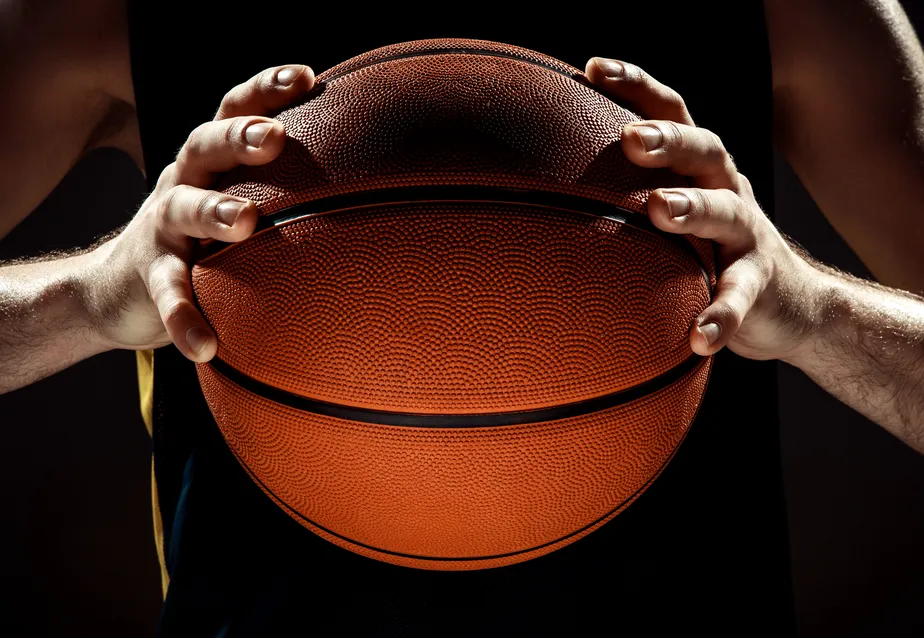

Modalidade esportiva
Basquete
O basquete foi criado em 1891 pelo professor canadense James Naismith, em Massachusetts, nos Estados Unidos. Ele buscava um esporte para praticar em ambientes fechados durante o inverno; as primeiras cestas eram caixas de pêssego.